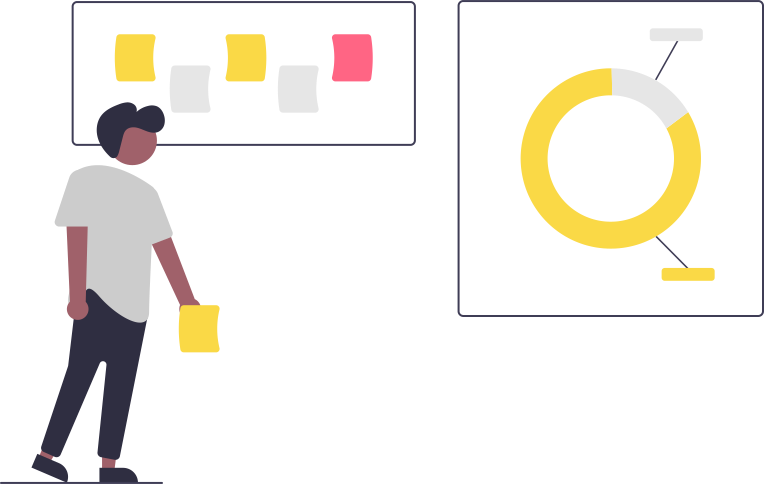

Reactive ORM
Reactive ORM involves addressing negative comments or reviews in a timely and professional manner, engaging with customers, and taking steps to resolve any issues raised. By effectively managing negative feedback, businesses can maintain a positive reputation and build trust with their customers. This approach is an essential component of online reputation management as it demonstrates a commitment to providing excellent service.
